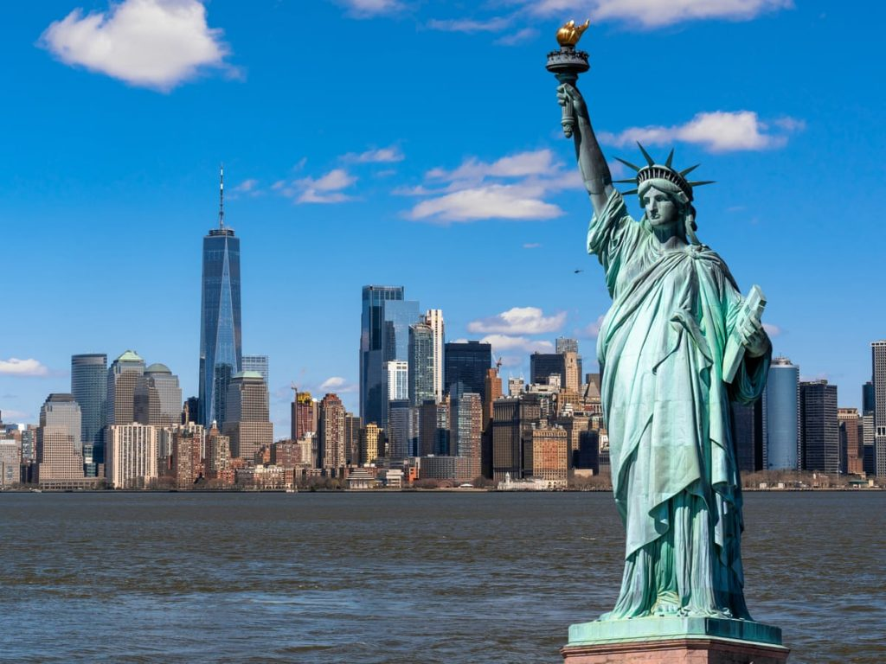
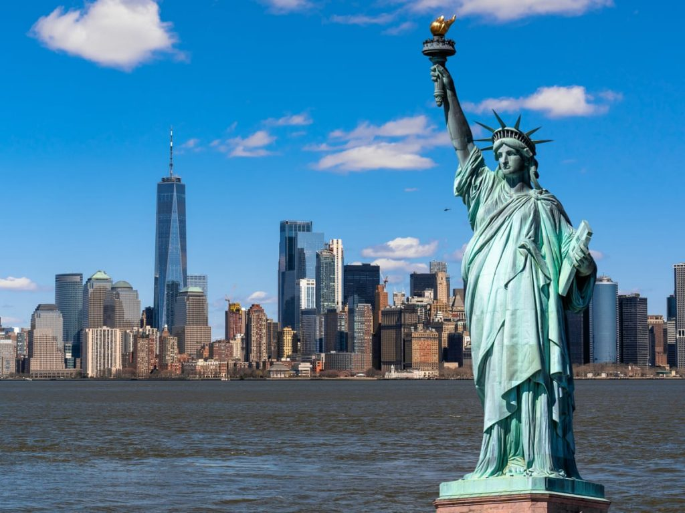

Statue de la Liberté
Symbole universel de liberté, cette statue majestueuse se dresse sur Liberty Island depuis plus de 130 ans. Elle accueille les visiteurs avec sa torche levée haut dans le ciel.
L’histoire de la ville de New York s’étend sur plusieurs siècles et commence bien avant l’arrivée des premiers colons dans ce qui est maintenant Manhattan. Voici un aperçu de cette riche histoire :
Exploration de la baie de New York :
Premières explorations et contact avec les autochtones :
Fondation de la Nouvelle-Amsterdam :
Consolidation de New York :
Aujourd’hui, New York est la plus grande ville des États-Unis et l’une des métropoles les plus importantes et dynamiques du monde, tant sur le plan démographique que financier. Elle continue d’être un centre décisionnel majeur et une capitale mondiale de la finance et de la Bourse
Symbole universel de liberté, cette statue majestueuse se dresse sur Liberty Island depuis plus de 130 ans. Elle accueille les visiteurs avec sa torche levée haut dans le ciel.
Ce gratte-ciel légendaire, inauguré en 1931, offre une vue imprenable sur Manhattan. La nuit, lorsque la ville s’illumine, le spectacle est féérique.
Construit sur l’emplacement du World Trade Center, ce bâtiment est devenu le plus haut de New York et d’Amérique du Nord. Son observatoire au 100e étage offre une vue panoramique exceptionnelle.
En hommage aux victimes des attentats de 2001, ce lieu de mémoire se compose de deux immenses bassins où l’eau s’écoule, avec les noms des victimes gravés.
Outre ses collections artistiques, l’architecture en spirale de ce musée conçu par Frank Lloyd Wright vaut à elle seule la visite.
Au sommet du Rockefeller Center, cette plateforme d’observation offre une vue panoramique à 360 degrés sur toute la ville, y compris Central Park.
Plus vieux pont de la ville, il relie Manhattan à Brooklyn et est un incontournable pour les promenades.
La gastronomie new yorkaise est un véritable voyage culinaire à travers la diversité culturelle de cette ville cosmopolite. Voici quelques plats incontournables à déguster lors de votre séjour à New York .
Prix moyen par nuit : 140 €
Prix moyen par nuit : 108 €
Prix moyen par nuit : 122 €
Prix moyen par nuit : 92 €
À New York, plusieurs moyens de transport sont disponibles pour les pèlerins et les visiteurs. Voici quelques-uns d’entre eux :